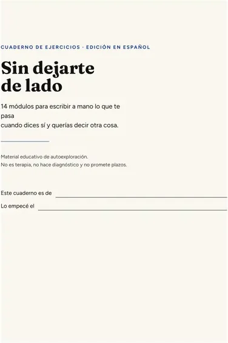

Sin dejarte de lado Cuaderno llenable · 14 módulos
Lo que no alcanzaste a decir, escríbelo aquí.
Un cuaderno de 14 módulos para anotar las veces que dijiste que sí queriendo decir que no, y dejar escrita una respuesta posible antes de necesitarla. 12,00 USD, pago único. Sin suscripción ni cobros después. Si tu país aplica impuesto, el checkout te lo muestra antes de pagar.
Primero miras el material. El pago está más abajo.

Es un lanzamiento inicial: todavía no tengo testimonios que mostrarte. Por eso la página enseña las páginas reales del cuaderno y no la opinión de nadie.
02 Qué es esto
Es un PDF llenable de 14 módulos: lo abres en el celular y escribes en los campos, o lo imprimes y lo llenas a mano.
Cada módulo tiene para qué sirve, un ejemplo ficticio, el ejercicio con renglones y unas preguntas al final.
No es terapia, no hace diagnóstico y no te dice qué contestar: te da el espacio para decidirlo tú, antes de que te lo pregunten.
03 Tres páginas reales
Así se ve el cuaderno por dentro.
Son capturas del archivo que recibes, sin retoque. Desliza de lado.
04 El índice completo
Los 14 módulos, con nombre y apellido.
Van en orden, pero el orden es una sugerencia. Ningún módulo depende de haber hecho el anterior.
- 01Cómo usar este cuadernoapertura
- 02Mi mapa de situacionesreconocer
- 03El sí que sale soloreconocer
- 04Hecho, interpretación, reacción y límite posiblediferenciar
- 05Lo que avisa mi cuerpoobservar
- 06Lo que pido y lo que me calloobservar
- 07Un límite pequeñoexperimentar
- 08La pausa antes de responderexperimentar
- 09Frases mías para decir nocomunicar
- 10Pedir sin explicarme de máscomunicar
- 11Después de una críticacomunicar
- 12El silencio después del nosostener
- 13Cuando el patrón regresasostener
- 14Mi plan de prácticasostener
Al final, un anexo con tres tarjetas de consulta rápida para recortar.
05 Para quién
Mejor decirlo antes de que pagues.
Es para quien…
- acepta de más por no incomodar a nadie;
- escribe a mano o en pantalla y le acomoda ordenar sus cosas por escrito;
- quiere llevar pensada una respuesta corta para la próxima vez;
- prefiere hacerlo solo, a su ritmo, sin contarle su historia a nadie.
No es para quien…
- busca terapia, diagnóstico o acompañamiento profesional — esto no lo sustituye;
- espera un resultado garantizado o una fecha: aquí no hay plazo prometido;
- no quiere escribir nada (todo el cuaderno es escribir);
- está en una situación con violencia, amenazas o miedo de alguien: eso merece apoyo de una persona preparada, no un cuaderno.
06 Cómo funciona
Cuatro columnas, tu letra.
El formato del cuaderno es este: cada caso tuyo entra en cuatro columnas, y la cuarta se escribe antes de que vuelvas a necesitarla.
situación
pensamiento
respuesta
límite posible
situación · pensamiento · respuesta · límite posible
Nadie lee lo que escribes más que tú. Ninguna pregunta es obligatoria, y el cuaderno te lo dice por dentro: puedes saltarte la que no quieras contestar.
07 Lo que recibes
Lo que entra en el archivo.
14 módulos llenables, cada uno con para qué sirve, un ejemplo ficticio marcado como tal, el ejercicio y las preguntas del final.
Versión digital llenable (escribes en pantalla y guardas tu copia) y versión para imprimir en Carta o A4.
Tres tarjetas de consulta rápida para recortar: antes de responder, antes de decir sí, y después de una crítica.
El aviso, módulo por módulo, de que puedes saltarte cualquier pregunta, y la nota de cuándo conviene buscar apoyo profesional.
Lo que NO recibes
- Comunidad, grupo, sesiones ni asesoría personalizada.
- Seguimiento, correcciones ni respuesta a tus ejercicios: nadie los lee.
- Diagnóstico, terapia ni indicación clínica.
- Promesa de resultado o de plazo.
08 Precio y condiciones
12,00 USD
Pago único de 12,00 USD: no hay suscripción, ni cobros mensuales, ni un segundo cobro escondido. El cobro lo procesa una plataforma de pago externa, que cobra en la moneda de tu país y añade el impuesto local cuando corresponde — lo verás en la pantalla de pago antes de confirmar.
- Acceso inmediato: terminas el pago y la página siguiente trae el botón de descarga.
- El archivo es tuyo; lo guardas en tu dispositivo y no caduca.
- Devolución sin preguntas, 30 días — y te quedas con el archivo.
Falta pegar el enlace de pago. El botón está deshabilitado a propósito: todavía no existe checkout.
¿Dudas antes de pagar? vendawest007@gmail.com
09 Política
Devolución y soporte, tal cual.
Devolución sin preguntas, 30 días. Escribes a vendawest007@gmail.com y te devolvemos los 12,00 USD. No tienes que explicar por qué, no tienes que haber llenado nada, y te quedas con el archivo. No hay condición ni letra chica.
Soporte. Mismo correo. Atiende una persona, no un robot, y puede tardar. Si el archivo no te llega o no te abre, escribe y lo resolvemos.
Este es material educativo de autoexploración. No es terapia ni tratamiento y no es un diagnóstico. Si al escribir aparece miedo de alguien, violencia o un malestar que no baja, conviene buscar apoyo profesional o el servicio de atención de tu país.
10 Preguntas frecuentes
Cinco preguntas, con respuesta.
¿Esto es terapia o un tratamiento?
No. Es un cuaderno de ejercicios para escribir y ordenar tus propios casos. No hace diagnóstico, no sustituye a un profesional y no promete resolver nada por sí solo. Si lo que traes te está pesando mucho, busca apoyo profesional; el cuaderno lo dice también por dentro.
¿Tengo que escribir sobre mi familia o contarle mi historia a alguien?
No. Nadie lee tus respuestas más que tú. Ninguna pregunta es obligatoria y el cuaderno te indica que puedes saltarte cualquiera. No se te pide subir ni enviar nada, y esta página no te pregunta nada antes de comprar.
¿Cómo lo recibo y en qué formato?
Es un PDF llenable, con una versión para imprimir. Al terminar el pago llegas a una página con el botón de descarga, y el archivo queda en tu dispositivo. Lo puedes llenar desde el celular, en la computadora o en papel.
¿Cuánto tiempo me toma?
Los 14 módulos están pensados para llenarse por partes, a tu ritmo, sin fecha. El último te pide una acción pequeña para la semana siguiente y un espacio para anotar qué pasó. No hay plazo prometido, porque eso dependería de cada persona y no lo podemos medir por ti.
¿Y si no me sirve?
Devolución sin preguntas durante 30 días: escribes a vendawest007@gmail.com, te devolvemos los 12,00 USD y te quedas con el archivo. Y antes de comprar ya viste tres páginas reales aquí arriba, para que decidas viendo el material y no la descripción.
Lo que no alcanzaste a decir, escríbelo aquí.
Cuaderno llenable en PDF, 14 módulos, versión para imprimir incluida. 12,00 USD, pago único (más el impuesto de tu país, si aplica). Devolución sin preguntas, 30 días.
Comprar el cuaderno — 12,00 USDFalta pegar el enlace de pago. El botón está deshabilitado a propósito: todavía no existe checkout.
Si no es para ti ahora, está bien. Vuelve a ver las páginas cuando quieras.